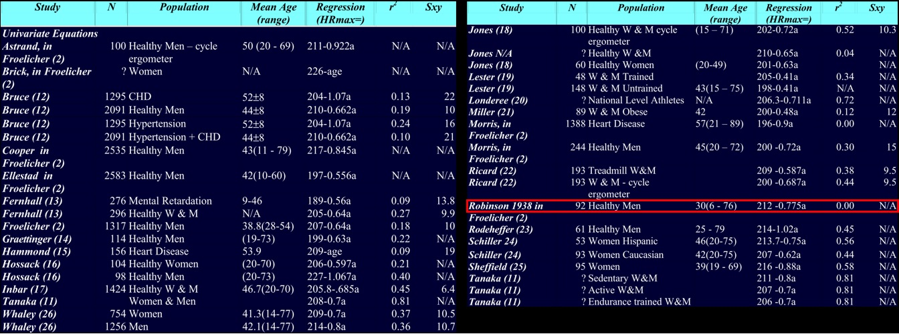
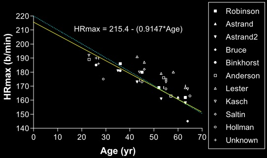
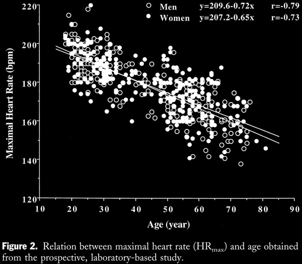
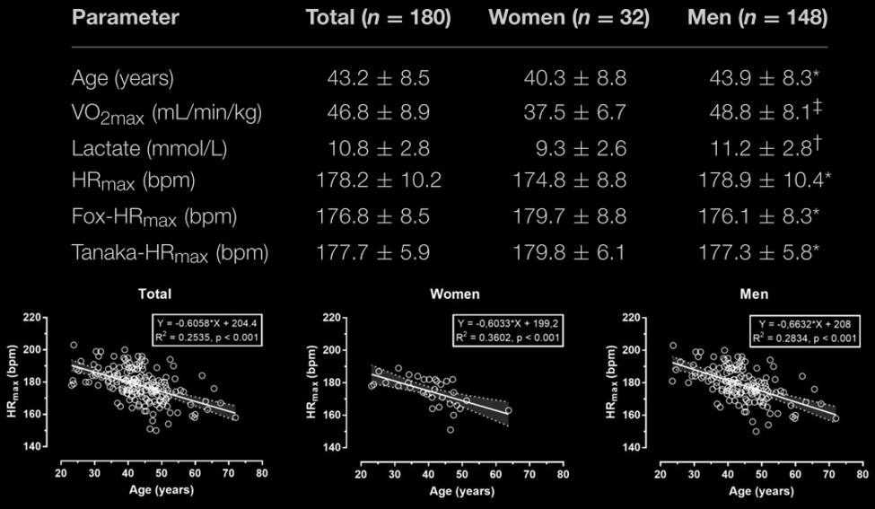
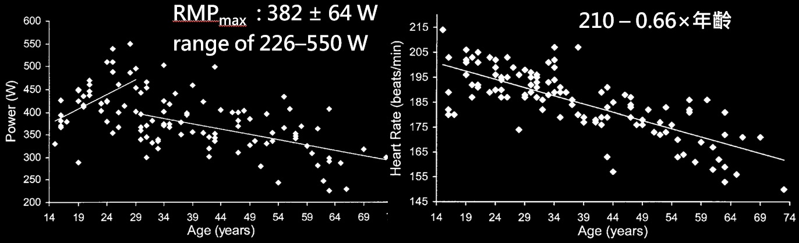

最大心律公式怎麼來的 哪個公式比較準
一、歷史
最大心率公式大家比較常聽到的就是 220 – 年齡，基本上這個公式幾乎已經變成定律了，但真正使用上就會發現準確度有待考驗，且實際上這個公式其實並非從原始實驗資料得出，我們可以先看一下有關最大心率公式的論文。通常看這種論文有幾個地方要注意，就是樣本數、族群、決定係數以及標準差，除了標準差外，其餘數值都是越大越好。從相關論文找到的公式有 30 條以上，如圖一所式，當然還有更複雜的沒有列出來，這篇論文是 2002 年所整理的，相信如果是 2023 年整理得還會有更多條，220 – 年齡 這公式存在很久了 但卻沒出現在上面，那麼我們就先來看這條公式是如何誕生的。
|  |
|---|
| 圖一：一些最大心率的來源及公式[1] |
這個式子可以追溯到 1970 年 FOX 與Haskell 兩人合著的論文中，但因為找不到論文可看，所以我也不知道怎麼提出的，不過根據這篇論文，原始資料應該就是圖二，虛線是 220 – 年齡 但回歸直線應該是黃線才對。而有關最大心率的公式最早是由，1938 年 Robinson 研究所提出，當然不論是哪一篇研究，幾乎任何一篇論文都可以看到圖二的趨勢，也就是做完最大攝氧量測驗時，年齡與最大心率會有負相關的趨勢，所以現在任何一條公式都會與年齡有關，問過一些醫學背景的人給的解釋，是因為心肌的老化造成最大心跳降低。
|  |
|---|
| 圖二：220 – 年齡[1] |
那麼去研究 220 – 年齡的這位作者有什麼評論，即便是到 2023 年仍然沒有個可接受的公式，不過在當時是推薦使用 Inbar 得到的公式，但不管用哪個反正都差很多就是了，所以最好的方式還是去做測驗。通常去做最大攝氧量測驗且有達標的話，心率通常會非常接近你的最大心率，所以如果你真的想要得到一個準確的最大心率，測驗還是免不了的。像我自己就有測過，之後在訓練時心跳都幾乎不會超過測驗的值，當然對於不同的運動，例如自行車與跑步，能操出的最大心率也不同，通常來說跑步的最大心率會高於自行車。所以跑步所得到的最大心率，會更接近真實的最大心率，但這還跟熟練度有關，例如一個自行車手所測到的最大心率，可能騎自行車測的會比跑步還要高。
二、測驗
如果是做測驗 要如何知道是否有達標呢，一般來說需要借助實驗室的儀器來測驗，當有達到這邊所列出來的標準，那麼在做最大攝氧量測驗中的最大心率，就可以當作你的運動的最大心率，既然是最大攝氧量，那到最後攝氧量就會趨於平緩，也因為強度過高，所以呼出的二氧化碳，會比呼入的氧氣多，也會造成血乳酸過高，如果各位觀眾有機會去做最大攝氧量測驗的話，差不多也是使用這些標準去判定，一般的使用者可以自己去跑 Ramp test，用出現的最大心跳當作你的最大心跳即可。
三、較新的公式
那麼如果不想測驗，現在有沒有推薦的公式呢？2020 有篇論文做了研究，還是沒有較準確的公式，但我自己是用 208 – 0.7*年齡 的這個公式，因為相較於 220 – 年齡 會稍微準一點，所以就這篇論文來看誤差都還滿大的。
 |
|---|
| 圖三：較新的公式[2] |
而 208 – 0.7*年齡 的這個公式出自於 2001 年的論文，這篇論文找了 514 位受試者，分別有男 237，女 277，年齡從 18 到 81 歲，其中有做耐力訓練有 229 人，久坐少動 285 人，可以看到圖四的相關係數有高於 0.7，雖然還不算高但是至少有個根據也尚可接受，當然這也告訴你對於同年齡的人來說，最大心率也不一定會一樣，必定還有其他影響因素。
|  |
|---|
| 圖四：207 – 年齡[3] |
當然本頻道是著重於運動的頻道，所以就去找了針對跑步與自行車的研究，這邊就有篇對於休閒跑者去做的研究，年齡大概就是中年、有稍微再練的跑者，詳細的可以看表格，可以看到我常用的公式，對於這族群來說是一個相對較準的公式，而且男生算出來的又比測量值更接近，這也是為什麼我比較常用這公式的原因。
|  |
|---|
| 圖五：給休閒跑者的公式[4] |
而自行車也有篇論文去做研究，這篇的受試者不論是能力與年齡範圍都滿廣的，最後的結果就如圖六所示 公式為 210 – 0.6*年齡，也可以看到最大心率隨年齡下降，不論是跑步或是自行車都很明顯。另外這篇論文也告訴了我們一件事，就是最大心率是無法靠訓練來增加的，如果在訓練中出現了史上最高的心率，儀器沒問題的話那就該更新這個數值，但這只代表以前測到的不是最大心率而已，並非是靠訓練讓最大心率增加了。
|  |
|---|
| 圖六：給自行車手的公式[5] |
影響最大心率高低主要是基因，那除了隨年齡降低外，還有其他的影響因素嗎？在 2021 年有篇論文去做了多因的迴歸分析，得到這三條公式，裡面有許多的因素，係數越大代表影響越明顯，所以從這可以看到年齡的係數很大，而其他係數其實就已經很小了。所以就不太能夠說明是有關係，當然即便數字很大，也要有個理由來說明，否則就只是無腦去做回歸而已，所以就這篇論文來看，列出來的因素中，年齡還是主要因素，其餘就不知道。
229 – 0.64* age – 0.23* body mass + 0.02* BMI – 0.38* VO2max + 0.33* body fat + 0.02* fitness level + 8.74* sex + 0.97* testing modality. [6] 229 – 0.64* age – 0.23* body mass − 0.38* VO2max + 0.33* body fat + 0.44* fitness level + 8.74* sex + 0.97* testing modality. [6] 225 – 0.62* age – 0.23* body mass + 0.02* BMI − 0.32* VO2max + 0.33* body fat + 0.37* fitness level + 8.32* sex + 0.97* testing modality. [6]
雖然最大心率的研究持續了一百年，但目前仍然沒有一個較準確的公式能用，且220 – 年齡這條公式就是都市傳說沒錯，所以能用的最好還是用測的，而不論是哪份研究 與年齡成負相關趨勢很明顯，原因就是心肌會隨年齡老化的關係。而不同種類的運動最好是不同的公式，這邊就有去找出兩篇論文分別對於，跑步與自行車最大心率測驗的公式，建議可參考這兩個來取代原本的 220 – 年，當然最大心率還跟很多因素有關，但就目前的研究看起來最顯著的就是年齡，也期待未來能夠有更準確的公式直接使用。
參考資料
[1] Robert Robergs, Landwehr R. The surprising history of the “HRmax=220-age” equation. Journal of Exercise Physiologyonline 5(2): 1-10, 2002.
[2] Shookster D, Lindsey B, Cortes N, Martin JR. Accuracy of Commonly Used Age-Predicted Maximal Heart Rate Equations. Int J Exerc Sci. 2020 Sep 1;13(7):1242-1250. PMID: 33042384; PMCID: PMC7523886.
[3] Tanaka H, Monahan KD, Seals DR. Age-predicted maximal heart rate revisited. J Am Coll Cardiol. 2001 Jan;37(1):153-6. doi: 10.1016/s0735-1097(00)01054-8. PMID: 11153730.
[4] Nikolaidis PT, Rosemann T and Knechtle B (2018) Age-Predicted Maximal Heart Rate in Recreational Marathon Runners: A Cross-Sectional Study on Fox’s and Tanaka’s Equations. Front. Physiol. 9:226. doi: 10.3389/fphys.2018.00226
[5] Balmer J, Potter CR, Bird SR, Davison RC. Age-related changes in maximal power and maximal heart rate recorded during a ramped test in 114 cyclists age 15-73 years. J Aging Phys Act. 2005 Jan;13(1):75-86. doi: 10.1123/japa.13.1.75. PMID: 15677837.
[6] Lach J, Wiecha S, Śliż D, Price S, Zaborski M, Cieśliński I, Postuła M, Knechtle B and Mamcarz A (2021) HR Max Prediction Based on Age, Body Composition, Fitness Level, Testing Modality and Sex in Physically Active Population. Front. Physiol. 12:695950. doi: 10.3389/fphys.2021.695950